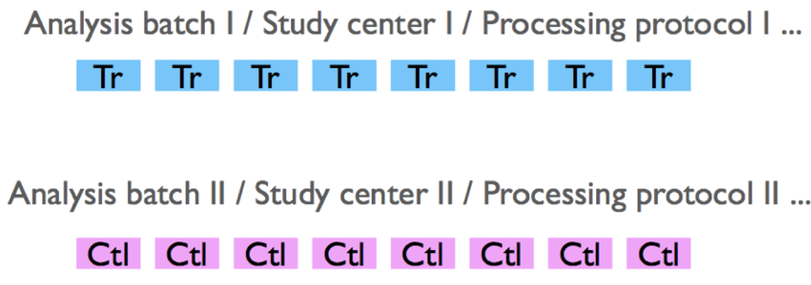

RNA-seq
Secuenciación de Ilumina
Videos que explican la secuenciación por síntesis (Illumina)
Preguntas
Hablamos sobre el diseño experimental y algunos de los puntos importantes para tener en cuenta cuando se planea un experimento de RNA-seq.
Tomando en cuenta el siguiente diseño experimental, discute con tus compañeros las siguientes preguntas:

Quiz